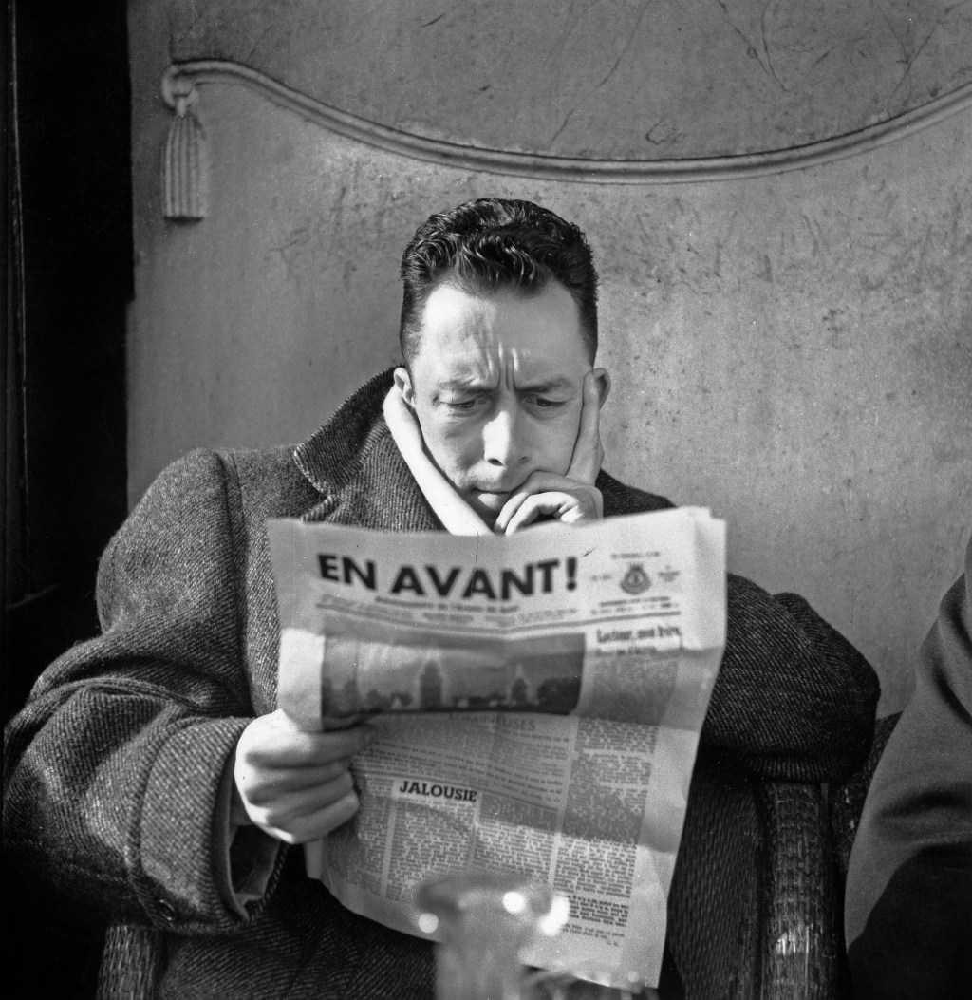

Cuando un filósofo busca discutir temas como la libertad humana, la autenticidad, el compromiso y las relaciones interpersonales, su tratamiento es inevitablemente abstracto y expresado en términos de conceptos generales o universales. Para Camus, la literatura es una forma de explorar estos problemas en términos de acciones, predicamentos, opciones y acciones individuales. De esta manera, distintos temas que han sido tratados de manera abstracta y general, pueden expresarse de manera concreta y se pueden materializar como expresión dramática.
Camus concibe al arte como una manera de moldear el mundo más allá de su forma actual, de manera que los conflictos dentro de él puedan ser focalizados.57 La importancia de resaltar la parte conflictiva de la realidad reside en que, para Camus, el arte es vehículo del pensamiento. De esta manera, se aleja de la búsqueda de representación del mundo en sí, y por lo tanto, de las estéticas de corte realista. Se le ha vinculado, por un lado, con el arte existencialista, y por otro, con el teatro del absurdo.
En la estética de Camus, la ficción no representa la realidad externa, sino que es una expresión libre e inmediata del pensamiento humano.58 Él criticaba la separación entre arte y filosofía, y sostenía que la unidad de propósito del absurdo es una sola:59 “No hay fronteras entre las disciplinas que el hombre se propone para comprender y amar. Se interpretan, y la misma angustia los confunde”.60
Sus novelas han sido interpretadas también como obras de protesta que actualizan algunos elementos generales de la tragedia griega, ya que hay una oposición entre el individuo y la sociedad que frustra o destruye sus valores. Así pues, el protagonista intenta conformar una serie de principios a partir de los cuales llevar su vida, en un mundo donde la disparidad entre el ideal —lo que el hombre busca— y lo real —lo que encuentra— es tan grande, que reduce su existencia entera a la incoherencia.
Un aspecto que ha llamado la atención sobre la trayectoria de Camus es el fuerte conflicto con el filósofo existencialista Jean-Paul Sartre, el cual surgió a partir de la publicación de El hombre rebelde. Sartre se había vuelto cercano al comunismo, y aunque nunca fue parte del Partido Comunista, estaba comprometido con un proyecto que combinaba el existencialismo y el marxismo.71 Camus, aunque renegaba del nombre de existencialista, estaba convencido que el existencialismo y el marxismo eran incompatibles, y que el marxismo constituía una secularización del pensamiento cristiano, en el cual se sustituía la figura de Dios por la idea del movimiento de la historia. Esto llevaba, por lo tanto, a la muerte de la libertad, encarnada en los horrores del estalinismo. Como contraparte, decía que la democracia burguesa reemplazaba la misma figura de Dios por el principio, un tanto ambiguo, de la razón. En nombre de la libertad, la sociedad burguesa justificaba la explotación y la injusticia social.72 A partir de esta diferencia de visión, Camus y Sartre sostuvieron una célebre polémica en la revista Les Tempes Modernes a inicios de los años cincuenta. Los lectores de la publicación, y especialmente Sartre, consideraron a Camus un idealista “iluso y romántico”, que se complacía en transponer a términos morales e individuales cualquier análisis de la realidad (en la época, la dinámica era inversa: llevar a términos colectivos e ideológicos los dilemas personales).73 Aunque el corte de Les Tempes Modernes era de izquierda no comunista, en esta época, su director, Sartre, se había acercado especialmente al estalinismo; el filósofo, en las páginas de esta publicación, expresa: “Todo anticomunista es un perro rabioso”. El hombre rebelde, por lo tanto, provocó una incomodidad por parte de los lectores y los directores de la revista.74 Varios meses después de la publicación de la obra de Camus, nadie se había dado a la tarea de hacer una reseña crítica sobre ésta, por lo cual Sartre comisiona a Francis Jeason, joven fuertemente influido por la filosofía sartriana, para escribirla. El texto de Jeason aparece en la edición del mes de mayo de 1954 de Les Tempes Modernes. Con él quedó abierta la polémica. La réplica de Camus, así como las contra-réplicas por parte de Jeason y Sartre, se publicarían en el número del mes de agosto.75 La polémica se ha publicado de manera independiente en distintas ediciones en francés y en español. Según algunos biógrafos de Camus, como son H. Lottman y O. Todd, la herida provocada por esta polémica con Sartre, al cual Camus consideraba íntimo amigo, incidió incluso en su trayectoria literaria. En este sentido, La caída ha sido interpretada como una ficción elaborada a partir del recuerdo del enfrentamiento.76 Sin embargo, existen corrientes de opinión que afirman que esta ruptura nunca tuvo lugar realmente. La confusión entre las cartas a Sartre enviadas en la década del 1932 al 1954 fue el indicador de que Camus negaba su influencia, achacándola a "malentendidos intencionados". Futuras indagaciones siembran dudas sobre la autoría real de esas cartas. p>